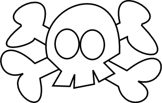
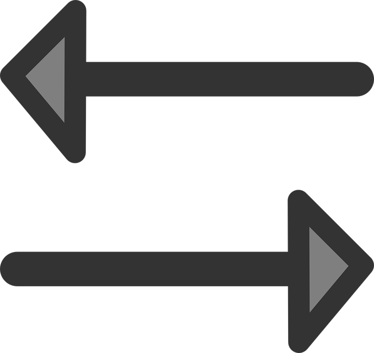

Top navbar
Home
SÚPER-PONG
CHOOSE MODE:
CHOOSE IA DIFFICULTY:
EASY
MEDIUM
HIGH

GOALS FOR WIN:
(between 1 and 99)
use  for move left and right
CHOOSE FOV:
(recommended: 75, 90, 120)
PRESS SPACEBAR TO START